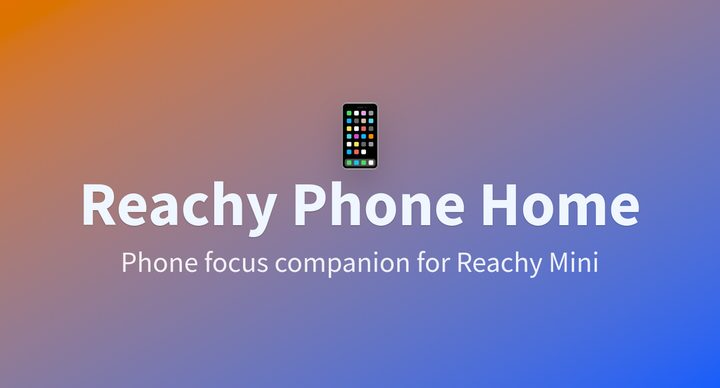
♥ 367Reachy Phone Home · 手机戒断
视觉专注✍️ Marco Domingo · Arm
社区点赞第一的应用。用机器人摄像头 + YOLO 持续检测“手机”与“人”：你一旦摸手机，Reachy 就会盯着你、做小动作、播放俏皮语音提醒。配了桌面与手机都能开的浏览器控制台，可调置信度、心跳间隔，还能开调试视频流。
itsMarco-G/reachy_phone_home ↗它只有 9 个自由度、一个能转的脑袋、两根会抖的天线和一颗 120° 的摄像头—— 但社区的开发者已经用它做出了 367 个赞的“手机戒断教练”、会解说 F1 的赛事主播、 全本地推理的婴儿看护，甚至让 AI 代理长出了身体。 这份图鉴把 Hugging Face Spaces 上 74 个精选应用、14 个代码项目、 官方硬件规格与开发套路，整理成一条从“开箱”到“造物”的路。
“Reachy Mini 是一个为黑客和 AI 建造者打造的开源表达型机器人。”—— 官方 SDK 仓库
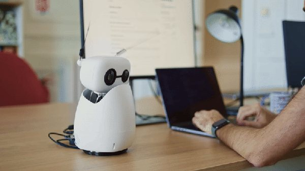
读懂硬件边界，才知道哪些社区应用为什么那样设计。下面所有数字都来自官方数据手册（docs/source/platforms/*/hardware.md）。
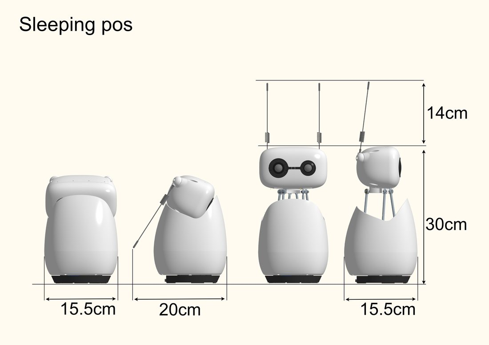
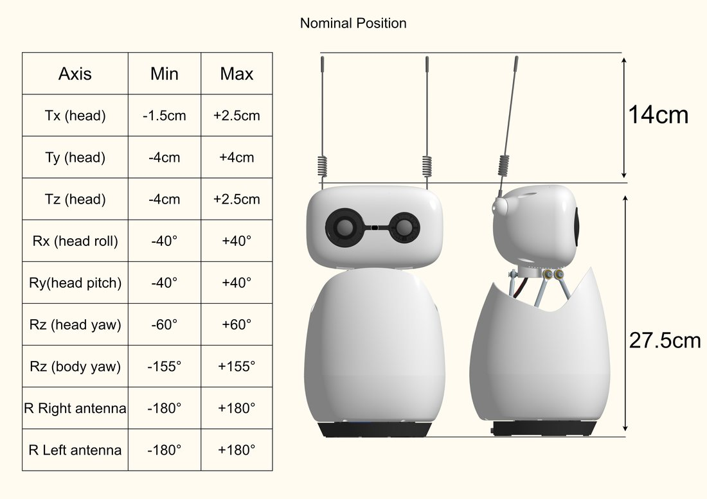
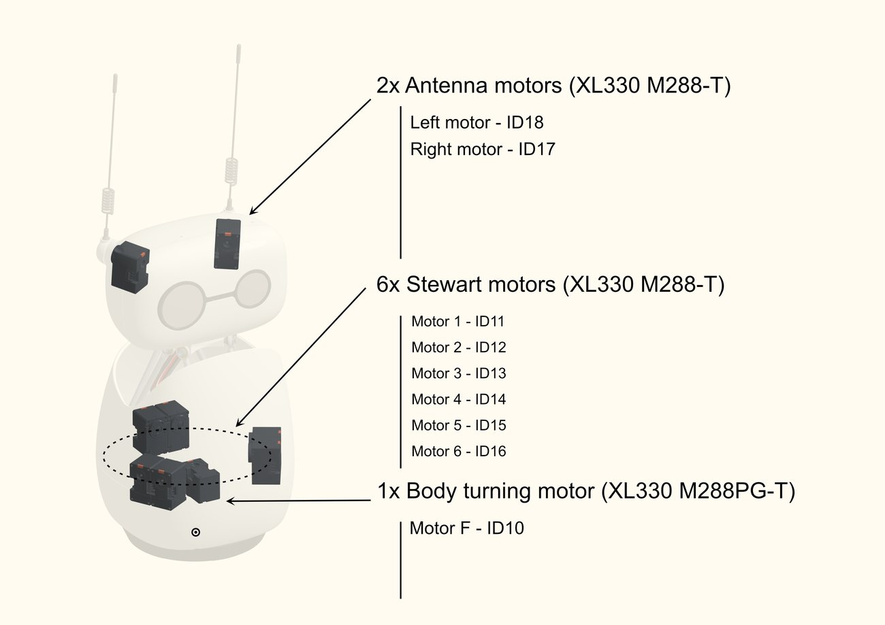
| 对比项 | Reachy Mini（Wireless） | Reachy Mini Lite |
|---|---|---|
| 算力位置 | 机载 CM4，自主运行 | USB-C 连电脑，用电脑算 |
| 电池 | 有（12.8 Wh LiFePO4） | 无，需插墙供电 |
| IMU | 有 | 无 |
| 自由度 / 摄像头 / 麦克风 | 完全一致（9 DOF、12MP 广角、4 麦阵列 + 5W 喇叭） | |
| 应用运行方式 | daemon 在机器人上，应用跑在 /venvs/apps_venv/ | daemon 在电脑上，应用跑在电脑上 |
| 适合谁 | 想让它独立站在桌上、做展台/陪伴 | 想快速迭代代码、接 Jetson/PC 跑大模型 |
| 组装时间 | 官方口径 2–3 小时（有逐步图文装配指南 Space） | |
Reachy Mini 的“应用商店”就架在 Hugging Face Spaces 上，机器人的控制面板里点 Install 就能装。 下面这些是社区里最值得先试的一批，按用途分了 7 类——点分类可以筛。
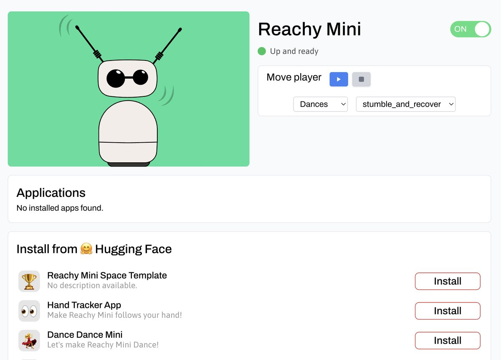
这六个项目代表了目前社区的天花板：从纯端侧 AI 到全本地 7 模型流水线。其中好几个出自芯片厂商员工或官方团队之手——往下翻还有官方的情绪库播放器、牵线木偶（手动示教录动作）等旗舰应用。

♥ 367社区点赞第一的应用。用机器人摄像头 + YOLO 持续检测“手机”与“人”：你一旦摸手机，Reachy 就会盯着你、做小动作、播放俏皮语音提醒。配了桌面与手机都能开的浏览器控制台，可调置信度、心跳间隔，还能开调试视频流。
itsMarco-G/reachy_phone_home ↗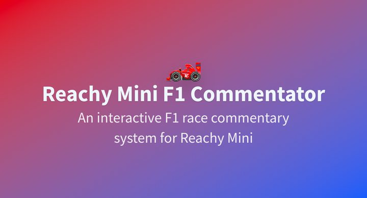
♥ 207两百多个点赞的“会看比赛的机器人”：从 OpenF1 历史赛事 API 回放真实赛况数据，用 210 套模板生成技术流/策略流/戏剧流三种风格的解说词，ElevenLabs 合成语音，同时让头部动作与解说节奏同步。支持 1×–20× 倍速回放。
d10g/f1commentator ↗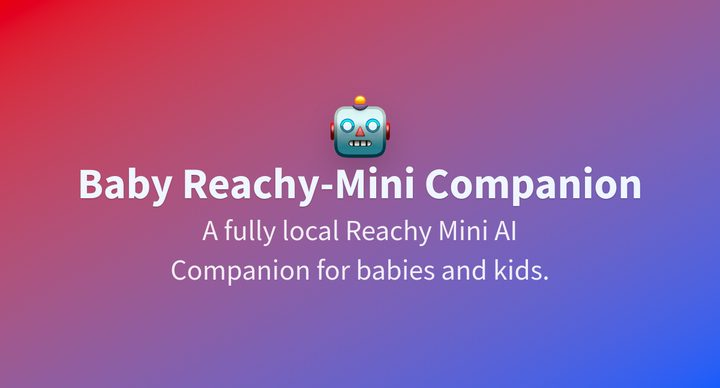
♥ 179最有野心的社区项目：7 个模型全部跑在本地（Mac + 约 700 美元的 Jetson Orin NX），零云端、零订阅。婴儿哭 → YAMNet 识别哭声 → VLM 推理决策 → 安抚动作 → 给家长发一张 Signal 照片。还能讲故事、认字、检测危险、跟踪人脸。
ravediamond/baby-reachy-mini-companion ↗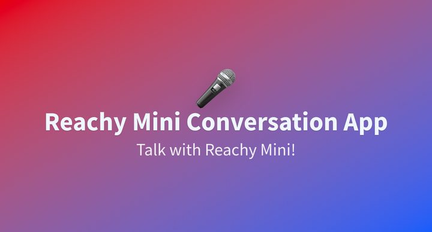
♥ 174官方旗舰应用：实时语音对话 + 视觉 + 性格化工具调用 + 编排动作。内置“动作融合”系统，会把说话时的呼吸、点头、天线抖动叠加到正在播放的舞蹈上，让机器人一边讲话一边自然摆动。
pollen-robotics/reachy_mini_conversation_app ↗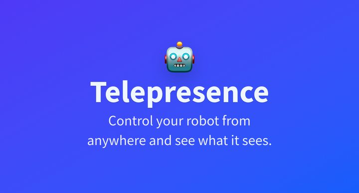
♥ 42移动端优先的遥操作应用：机器人摄像头 4:3 全幅画面、双向音频（你的麦克风从机器人喇叭出来，机器人麦克风回传给你），屏幕虚拟摇杆控制头部俯仰/偏航，头部到机械限位后底座接续旋转。链路里没有任何 AI，纯人对机器人。
pollen-robotics/telepresence ↗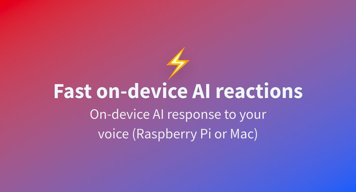
♥ 14一个假期家庭项目的成果：全部推理跑在树莓派 CPU 上，不外传。听到说话 → 快速转向说话人 → 用句向量做语义检索匹配意图 → 立刻用语音/动作回应。非语言反应延迟低于 100ms。
8bitkick/reachy_mini_reactions ↗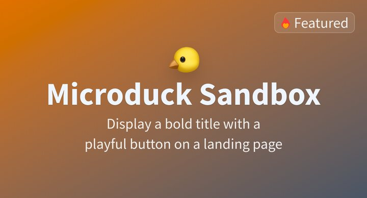
♥ 549（严格说这是 Pollen 的另一台机器人 Microduck，不是 Reachy Mini——但它和 Reachy 同属一个生态，社区项目会把两者放进同一个 MuJoCo 世界。）官方把真正的强化学习策略搬进浏览器：MuJoCo 编译成 WebAssembly 做物理步进，onnxruntime-web 以 50Hz 跑策略网络，没有服务器、没有后端。内置两种运动形态（腿式行走 / 轮式滑行），按 M 键切换。是理解“仿真到现实”的最好入口。
pollen-robotics/microduck-simulator ↗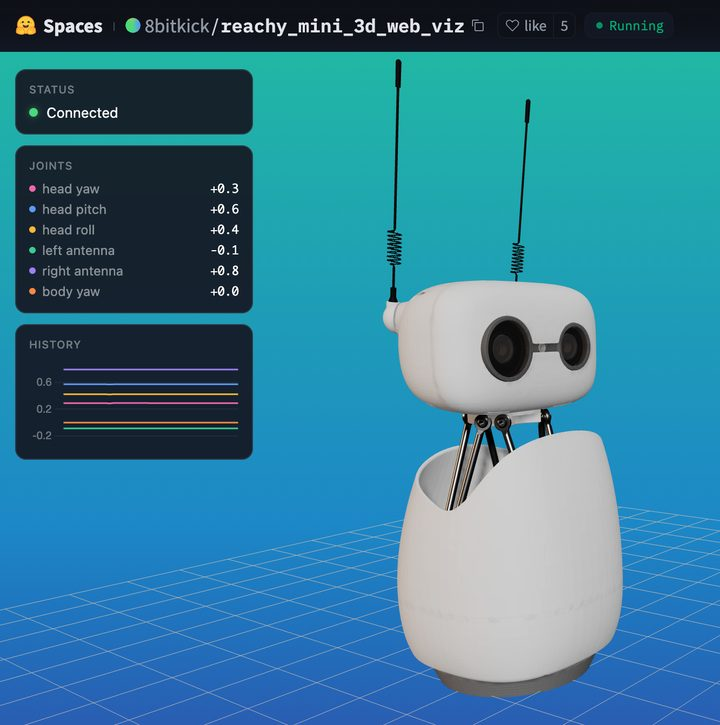
♥ 31在浏览器里实时看到 Reachy 的当前姿态：接通机器人后，一个 3D 模型以与实体一致的角度同步运动，用来调试动作、录 Demo 或做直播画面。
8bitkick/reachy_mini_3d_web_viz ↗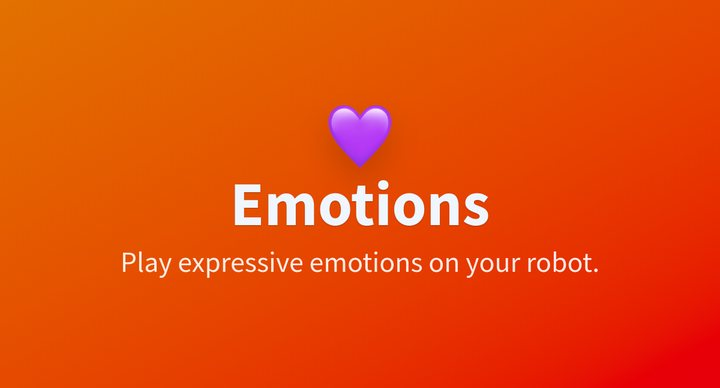
♥ 26把官方情绪库做成一个“普鲁契克情绪轮”：8 个颜色扇区（喜悦、信任、恐惧、惊讶、悲伤、厌恶、愤怒、期待）各分 3 档强度，点扇区出动作列表，点卡片就把轨迹以 50–100Hz 推到机器人上实时播放；中间的骰子随机抽一个情绪。浏览器端用 Web Audio 同步播放配套音效，链路里没有任何 AI——纯数据集回放。
pollen-robotics/emotions ↗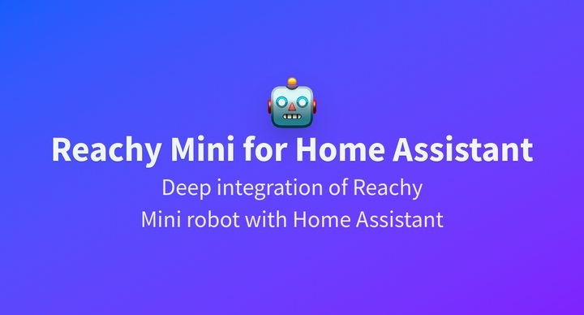
♥ 25把 Reachy Mini 变成智能家居的“身体”：通过 Home Assistant 的 Assist 语音管线接入全屋设备，机器人可播报状态、响应语音指令、用动作表达设备事件，并提供 HA 蓝图与边车服务。
djhui5710/reachy_mini_home_assistant ↗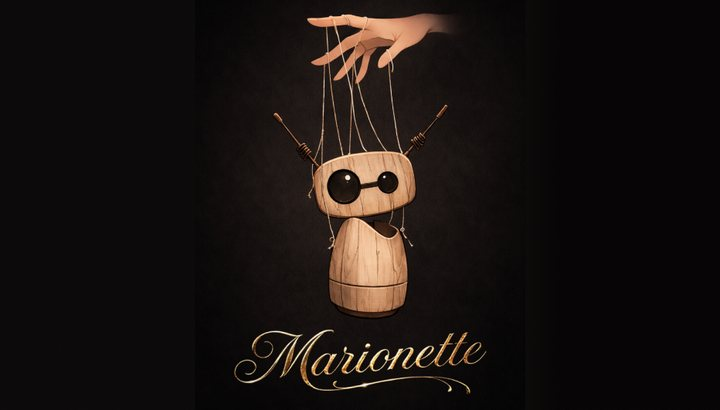
♥ 24官方录动作工具：把电机放松，用手直接“牵着”Reachy 摆姿势，它会把动作连同音频录下来，存成情绪库同款 schema（JSON + WAV），可以直接上传到 Hugging Face 变成社区动作。新用户建议用浏览器版 Marionette (JS)，手机也能开、免安装。
pollen-robotics/marionette ↗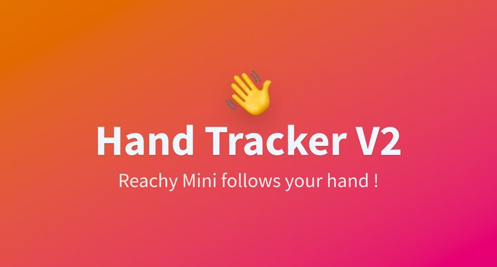
♥ 20官方手部跟踪应用：摄像头看到你的手，机器人实时跟着你的手移动，是展示“9 自由度值回票价”的最佳 Demo，也是理解实时控制环的推荐入门样例。
pollen-robotics/hand_tracker_v2 ↗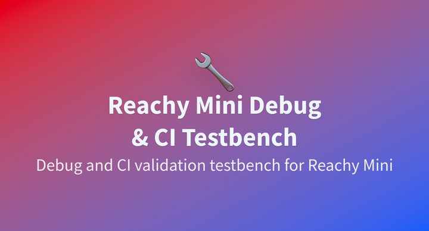
♥ 18官方出品的调试利器：自动检测 daemon 是否在跑，在线模式下可看 CPU/内存/磁盘/控制环频率、IP、实时头部位姿与全部 9 个电机位置，用滑杆手动调 roll/pitch/yaw 与天线，还能一键归零、唤醒、休眠。
pollen-robotics/reachy_mini_testbench ↗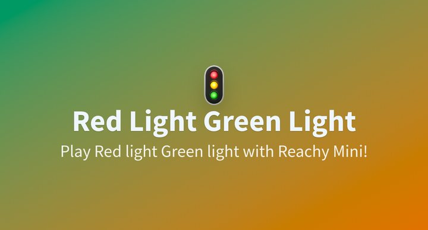
♥ 16官方小游戏：经典的“红灯绿灯”搬进现实——绿灯时你可以动、红灯时必须定住，机器人负责当那个转头抓你的人。
pollen-robotics/red_light_green_light ↗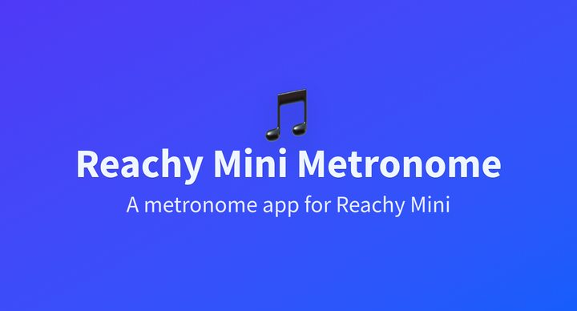
♥ 12把两根天线变成真正的节拍摆锤：左右反向摆动，配合合成点击音，重拍音高更高。BPM 40–208，支持 2/4、3/4、4/4、5/4、6/8 拍号。
Boopster/reachy_mini_metronome ↗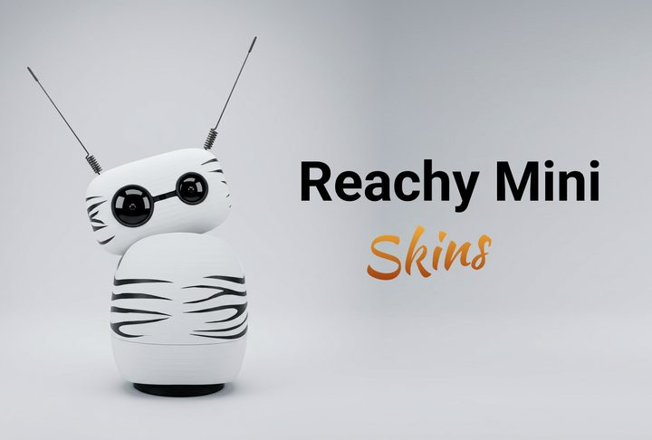
♥ 12社区 3D 打印皮肤库：可下载各种外观套件，把白色的 Reachy 换成你喜欢的造型，包含打印与装配说明。
pollen-robotics/reachy-mini-skins ↗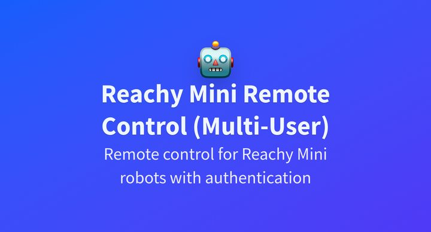
♥ 11一个中心化的多用户远程控制服务：用 Hugging Face OAuth 登录，每个用户连接自己的机器人，实时视频、双向音频、关节状态监控全部在浏览器里完成。
HuggingFaceM4/reachy_mini_remote_control ↗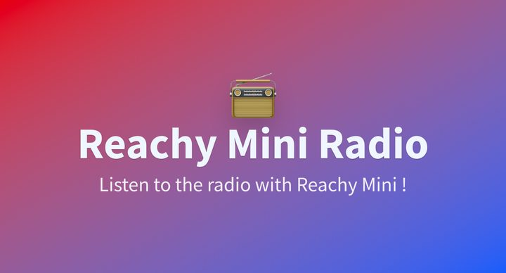
♥ 11官方示例应用：让 Reachy 当一台收音机，播放网络电台的同时用天线和头部做律动，界面极简，是理解“应用如何拿到机器人对象”的最好范本。
pollen-robotics/reachy_mini_radio ↗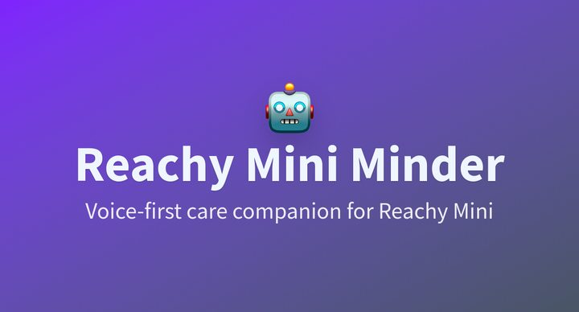
♥ 11语音优先的健康陪伴：用自然对话记录用药、跟踪头痛发作、生成给医生看的就诊摘要。技术上是一套完整的语音管线 + 结构化数据落地。
Boopster/reachy_mini_minder ↗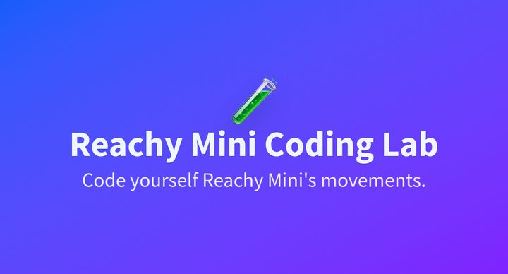
♥ 11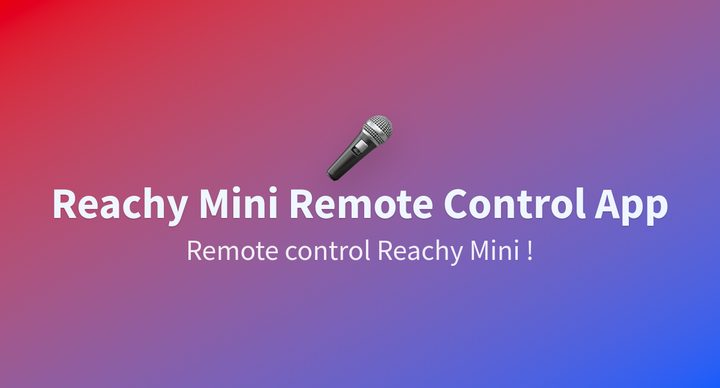
♥ 10给机器人装“反向客户端”：机器人主动以 WebSocket 连到远端服务器（例如 HF Space），从而被远程控制、推流与对讲，适合做无人值守的远程机器人。
pollen-robotics/reachy_mini_remote_control_app ↗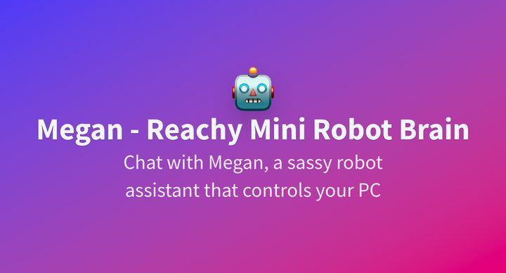
♥ 9一个“讽刺又戏剧化”的陪伴人格：GPT-4o-mini 驱动，带长期记忆、人脸跟踪（100Hz 平滑跟随）、声源定位转头（利用 4 麦阵列 DOA）、音乐律动、日程提醒与 Google Calendar 集成。
Halfzipp/reachy_mini_megan ↗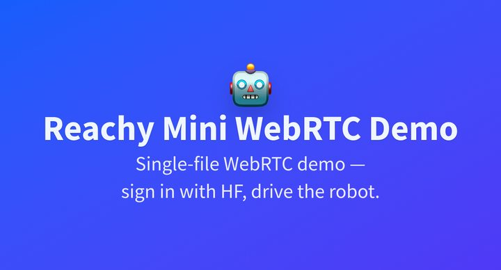
♥ 9一个文件讲清 WebRTC 接机器人：登录 Hugging Face、协商连接、拿到视频与音频轨、发送控制指令，是读懂 JS SDK 底层的最佳起点。
cduss/webrtc_example ↗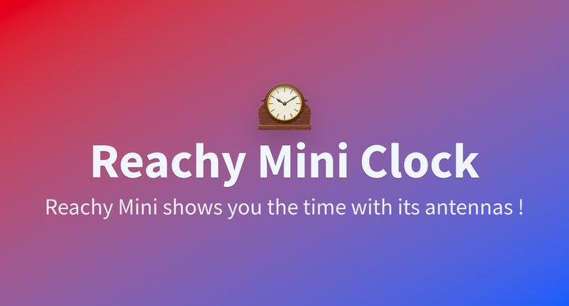
♥ 9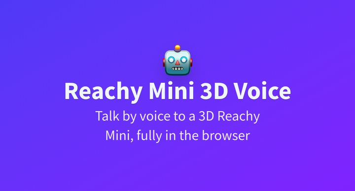
♥ 8把官方实时语音 Demo 里的“球体”换成 three.js 渲染的可动 Reachy Mini 3D 模型：模型会随对话状态做程序化微动作，头部晃动与助手语音同步，情绪和舞蹈动作则直接回放 Pollen 官方录制的轨迹数据集。
pollen-robotics/reachy-mini-3d-voice ↗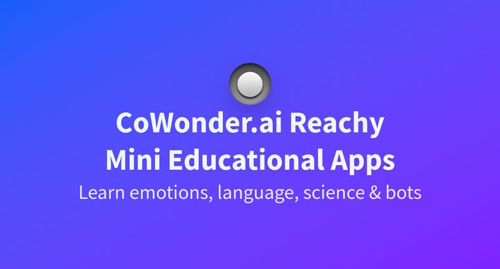
♥ 8八个面向亲子场景的教育应用打包发布：情绪镜子（机器人模仿你的表情）、Simon Says 姿势游戏、Science Lab 提问实验、语言伙伴、I-Spy 寻物、动物猜谜、用自然语言“编程”机器人、教机器人学新行为。
CoWonder-ai/reachy-mini-apps ↗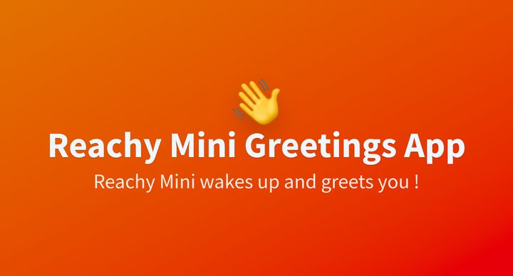
♥ 8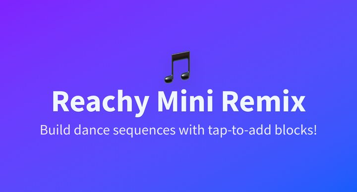
♥ 7用 Gradio 做的“搭积木式”编舞台：每个舞步是一块带 emoji 的按钮，点一点就加入序列，然后让 Reachy 一次性跳完整段。内置官方 18 个舞步，支持多套界面主题。
chelleboyer/reachy_mini_remix ↗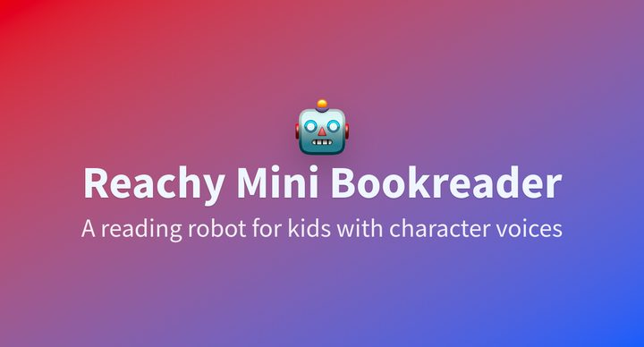
♥ 7给孩子的阅读机器人：摄像头看页面/听你翻页，用不同角色的音色朗读，配合情节做表情动作，把“读绘本”变成有表演的互动。
chitrark/reachy_mini_bookreader ↗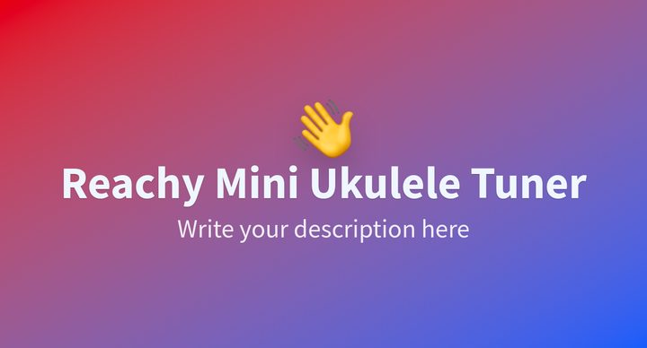
♥ 7用机器人的麦克风听你弹尤克里里，实时判断音准，走音时天线歪向一边，准了就竖起来——把调音变成看得见的反馈。
Boopster/reachy_mini_ukulele_tuner ↗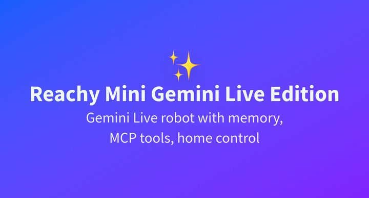
♥ 6把官方对话应用重写为 Gemini Live API 版本，新增按用户隔离的持久记忆、按 profile 挂载的 MCP 工具，以及离线唤醒词。全部通过机器人上的无头浏览器界面管理。
n0012/reachy_mini_conversation_app_gemini ↗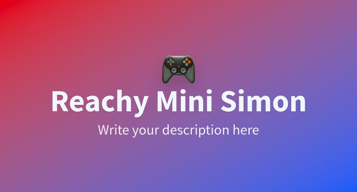
♥ 6经典 Simon 游戏的机器人版：Reachy 用手势/姿势序列出题，玩家复述，答错天线就耷拉下来。有 Python 与 JS 两个版本。
apirrone/reachy_mini_simon ↗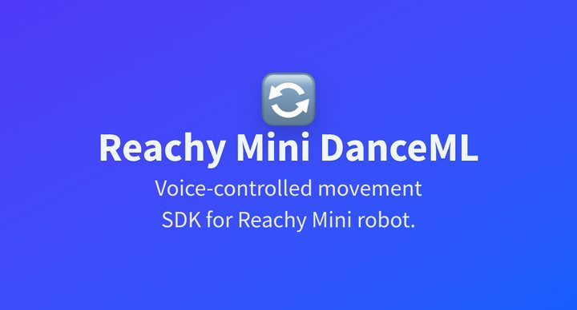
♥ 6用自然语言指挥机器人跳舞：OpenAI Realtime 做语音入口，11 个 function-calling 工具负责动作控制，内置 101 个预录舞蹈与情绪动作，另有一个 GPT-4.1 规划器负责多步编舞，还支持用波形函数程序化生成连续动画。
Boopster/reachy_mini_danceml ↗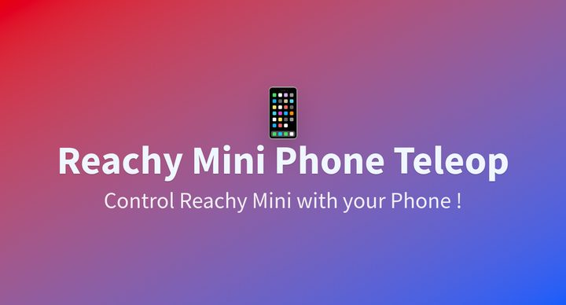
♥ 6把手机变成遥控器：利用手机的姿态传感器（陀螺仪/加速度计）直接映射到机器人头部姿态，倾斜手机就是转动头部，演示效果极佳。
apirrone/reachy_mini_phone_teleop ↗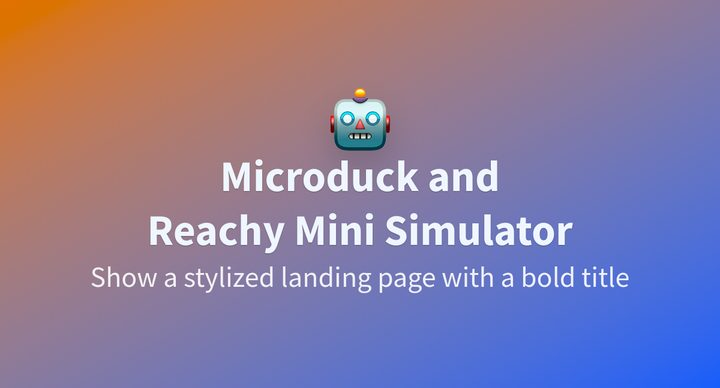
♥ 6在浏览器里跑一个共享的 MuJoCo 世界，把 Reachy Mini 和 MicroDuck 放在同一个物理场景里，纯前端、无需硬件，适合做多机器人协作实验。
RemiFabre/microduck-reachy-simulator ↗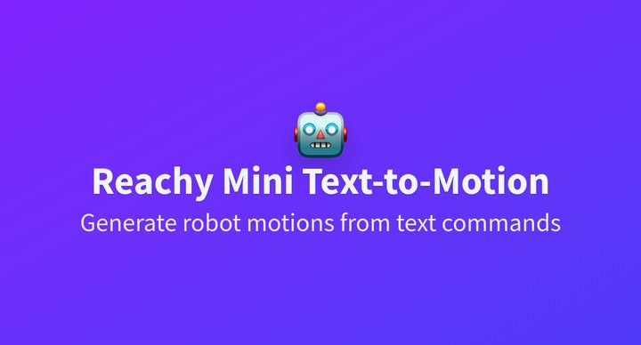
♥ 6官方实验室项目，瞄准生态里最缺的一环：一句自然语言 → 一段全新的表现力动作。建立在社区动作库之上（407 个动作 / 52 个带 reachy_mini_community_moves 标签的数据集）。生成分两段：先生成“表演简报”，再由 LLM 写出基于曲线的 motion clip（独立关键帧 + 命名缓动 + 程序化振荡器），最后夹取到语料库推导出的安全范围并求值成标准 recorded-move JSON。
pollen-robotics/reachy-mini-text-to-motion ↗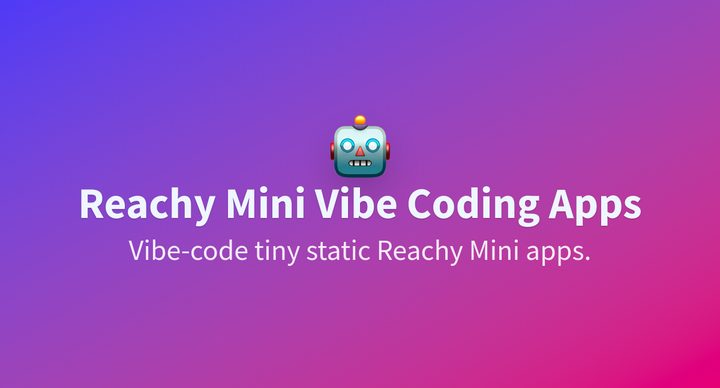
♥ 6“用嘴写小应用”的示范合集：一批极小的静态 Reachy 应用，全部由 AI 代理对话式生成，展示 vibe coding 时代的开发范式。
tfrere/reachy-mini-vibe-coding-apps ↗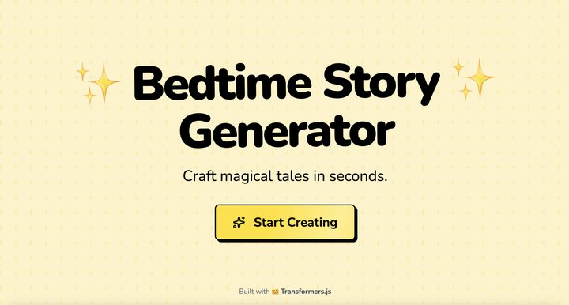
♥ 6官方浏览器应用：在浏览器里用 Gemma 3 270M（ONNX 量化版）本地生成睡前故事，再让 Reachy 讲给孩子听。用 JS 应用路线（reachy_mini_js_app）实现，是“小模型 + 浏览器 + 机器人”的官方范本。
pollen-robotics/bedtime-story-generator ↗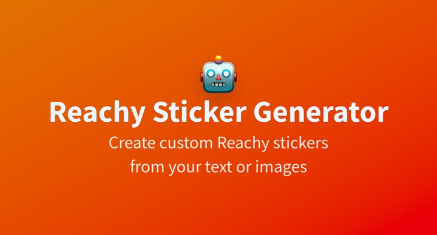
♥ 6用文字提示生成可爱的 Reachy 贴纸：先用 Nano Banana 做角色一致性生成（带参考图），再自动去背景（BRIA RMBG）并矢量化（Recraft），产出透明背景成品可直接下载。和机器人本体无关，但是社区周边的好玩工具。
pollen-robotics/reachy-sticker-generator ↗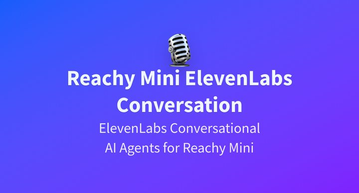
♥ 5接入 ElevenLabs Conversational AI 平台，自动从回复文本中检测情绪，并把情绪映射成表情动作——生气时天线后压、开心时头部上扬，语音与身体同步。
mindmodelai/reachy-mini-elevenlabs ↗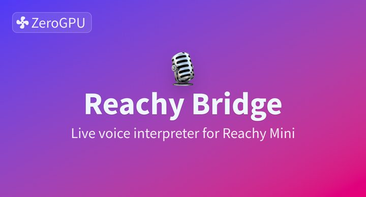
♥ 5零配置的双向语音翻译官：SeamlessM4T v2 一个模型同时完成识别+翻译+目标语言发声，祖辈说印地语、孩子听中文。网页里还有一个会跟着反应的 3D Reachy；本地运行时实体机器人会转头、点头、开口。
build-small-hackathon/reachy-mini-interpreter ↗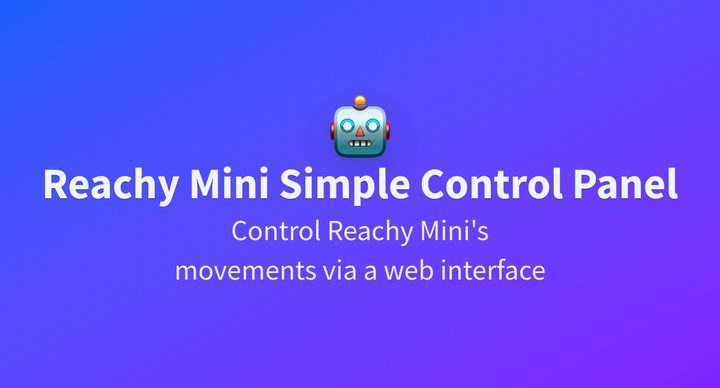
♥ 5纯 HTML/CSS/JavaScript 写的零依赖控制面板，通过 WebSocket 直连机器人：任务空间头部位姿（X/Y/Z/Roll/Pitch/Yaw）、底座偏航、天线角度全部可调，断线自动重连。
cduss/reachy_mini_simple_control_panel ↗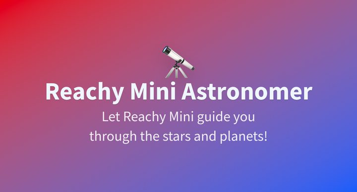
♥ 5把对话应用锁成“天文学家”人格，并加上真实天文计算：问它猎户座在哪、木星今晚可见吗，它会算出方位角与高度角，然后用头部**物理指向**那颗星。
dlouapre/reachy_mini_astronomer ↗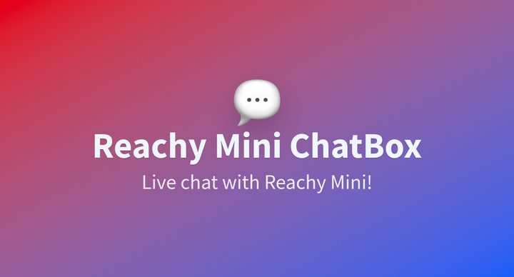
♥ 5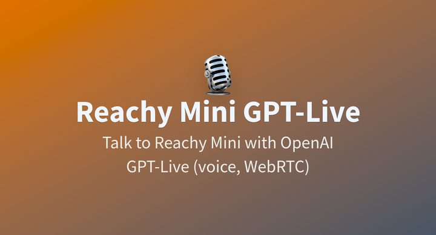
♥ 4一份荷兰语/英语双语的“开箱到对话”指南式应用：机器人 + 麦克风 + API Key，十分钟把 GPT-Live 语音通话跑起来，适合作为第一条成功链路。
Enricx/reachy_mini_gpt_live ↗网页版键盘遥控：支持 AZERTY/QWERTY/自定义布局，可切 POV 反向模式，速度、旋转、天线参数都能调，右侧实时显示位置与姿态反馈。
totosolat/reachy_mini_keyboard_teleop ↗官方 MCP 工具 Space：给对话机器人加上 DuckDuckGo 联网搜索能力，可被任何支持 MCP 的对话应用挂载。
pollen-robotics/reachy-mini-search-tool ↗聚合 Bluesky、YouTube、LinkedIn、TikTok、Reddit、X 上关于 Reachy Mini 的社区帖子，AI 过滤并分类成动态墙——想看别人在玩什么，从这里开始。
pollen-robotics/reachy-mini-social-wall ↗接待场景变体：人脸检测 + 人脸识别（本地 guests/ 相册）+ 实时语音 + 硬编码日历查询 + 邮件外发工具，配套一块实时标注的接待看板。GitHub 上有完整演示视频。
to-be/reachy_mini_receptionist ↗把 Reachy 变成全屋智能音箱：基于 shairport-sync 支持 AirPlay，基于 librespot 支持 Spotify Connect，手机上直接在设备列表里选 Reachy。播放时它会跟着节拍跳舞。
Taikos/reachy_mini_speaker ↗完全用 JavaScript 实现的 Reachy Mini 仿真器：不需要 Python、不需要机器人，在网页里就能验证运动学与动作序列。
askuric/reachy-mini-js ↗为社区动作库做的视频画廊：所有打上 reachy_mini_community_moves 标签的动作，都在 HF Jobs 上由无头 Blender 渲染成视频，网页通过 Hub API 懒加载流式播放，鼠标悬停静音预览，点击开声。
tfrere/reachy-moves-gallery ↗把天线当成输入设备：敲击天线会被识别成“按键”，页面上能看到每一次敲击的强度与波形，还有专门的教学关卡教你复现“天线抖一抖”的手感。
RemiFabre/reachy_mini_tap_lab ↗生产力场景：25 分钟专注 + 5 分钟短休 + 15 分钟长休，唤醒词 “Compita”，支持任务创建与语音交互，到点会用动作和语音提醒你休息。
adonaivera/reachy_mini_pomodoro ↗自动发现所有打了 reachy-mini 标签的 Space，按点赞数排名，每 5 分钟刷新——社区应用热度的实时榜单。
panny247/reachy-mini-leaderboard ↗一份“我多希望早点知道”的非官方实战指南，作者是 HP 的技术产品经理，内容来自他亲手搭建并部署一个语音 AI 代理的全过程：环境、模式、部署与常见陷阱。
curtburk/reachy-mini-developer-guide ↗基于官方对话应用的繁中改写，专门为 4–7 岁小朋友设计：词汇更简单、语速更慢、回复更短，并强化鼓励式反馈。
brucechou1983/reachy_mini_conversation_app_zh_tw ↗极简的视觉示例：摄像头实时物体检测，检测框中心直接映射成头部目标位姿，实现“盯着目标看”的闭环。适合作为视觉项目的起手模板。
backtoengineering/reachy_mini_object_detector ↗用 MediaPipe 识别手部关键点，用手势直接驱动 Reachy：挥手、指向、抓握，全部转成头/天线/底座的组合动作。
sidbha1980/reachy-mini-gestures ↗为对话应用加上一层“情绪表达”外壳：把回复内容映射到 Anima 的情绪标签，再驱动面部/身体姿态，让机器人表达更夸张。
danielritchie/anima_conversation_app ↗语音点歌 + 自动跳舞：语音控制 YouTube 播放，机器人用头部与天线做 DJ 动作，客厅派对模式。
signalnine/reachy_mini_dance_party_app ↗把一个 URL 丢给 Reachy，它会朗读内容并回答你的追问——把“稍后读”变成“听机器人讲给你听”。
harshahemanth/reachy_mini_pocket ↗面向无线版存储焦虑的实用工具：分析磁盘占用、清理临时文件、管理大文件，避免 16GB eMMC 被应用缓存塞满。
catxiii/reachy_mini_storage_guardian ↗官方 MCP 工具 Space：让机器人能回答“今天要不要带伞”，并配合动作播报天气要点。
pollen-robotics/reachy-mini-weather-tool ↗官方 MCP 知识库：把 Reachy Mini、MicroDuck 与 Pollen 的实时信息做成可查询工具，机器人回答产品问题不再靠幻觉。
pollen-robotics/reachy-mini-knowledge-tool ↗把唤醒词改成自定义的 “hey nora”，并附带 Jetson 上的 STT 部署分支，适合想换掉默认唤醒词的开发者。
suhaas-teja/reachy_mini_conversation_app ↗官方中央服务：为浏览器应用提供信令与身份验证，是 JS 应用通过 WebRTC 连到机器人的关键中间层。
pollen-robotics/reachy_mini_central ↗想自己翻：Hugging Face Spaces 搜索 “reachy mini” · 官方应用页 · 社区点赞排行榜 · 社区动态墙
光看简介不够。这一节把社区里最有代表性的三个项目拆到架构层，你能直接抄走它们的做法。
179 个赞，作者 ravediamond。
目标很明确：婴儿哭了，机器人自己去安抚，然后给家长发一张照片。全程不联网、不调云 API、不依赖预写脚本——
而是让一个视觉语言模型看着画面自己决定“现在该做什么”，通过工具调用去执行。
| 模型 | 作用 | 跑在哪 |
|---|---|---|
| Silero VAD | 判断“有没有人在说话”，省掉无意义的推理 | Mac（PyTorch） |
| Faster-Whisper | 语音转文字 | Mac（ONNX） |
| Kokoro | 文字转语音，负责“说话” | Mac（ONNX） |
| YAMNet | 音频事件识别——核心就是分辨“婴儿哭声” | Mac（ONNX） |
| YOLOv26n | 视觉目标检测，识别危险物与人 | 边缘设备 |
| Ministral 3B / Qwen 3B | 推理 + 工具调用（文本侧大脑） | Ollama（Mac）/ vLLM（Jetson） |
| Qwen3-VL 4B | 看图回答“宝宝在做什么、有没有危险” | Ollama（Mac）/ vLLM（Jetson） |
| 人脸跟踪 | 持续看向宝宝/家长，让互动有“注视感” | Mac |
if；③ 把“发照片给家长”这种闭环动作做进流程，
体验立刻从“玩具”变成“有用”。367 个赞，全社区第一。逻辑极简但极有效：摄像头 + YOLO 持续检测手机。 你伸手拿手机，它就开始“看着你”、做小动作、说俏皮话。作者还配了一个浏览器控制台，桌上、手机上都能开关和调参数—— 这个“应用自带 Web UI”的模式后来被大量社区应用照抄。
8088 端口，同网段手机也能开。PHONE_CLASS_ID = 67）；权重首次运行时自动下载PhoneFollower 用相机内参把检测框像素坐标换算成头部 look-at 姿态，并加 60px 防抖阈值——避免脑袋跟着检测抖动乱晃--conf、--process-every 这类参数暴露成命令行开关，
让用户自己平衡灵敏度与算力；② 检测不必每帧都跑，隔帧推理就能省一半算力；③ 视觉类应用强烈建议带一个 Web 控制台，
否则调试只能靠猜。14 个赞但技术含量极高：作者（8bitkick）带着家人用一个假期做完，目标是 全部推理跑在一颗树莓派 CPU 上，不外传任何数据。它不做“完整对话”，只做“听到 → 转身 → 反应”， 非语言反应的延迟低于 100 毫秒。作者自己在文档里写得很清楚：想要云端大模型对话，请去用官方对话应用； 想要隐私、离线、极快，这就是答案。
Space 上的应用是“装了就玩”，GitHub 上的这些项目则是去改它的身体、接它的大脑、把它变成别的东西。下表 14 个项目合计 2256 颗星标（抓取于 2026-09-18）。
| ★ | 项目 | 一句话 | 技术栈 |
|---|---|---|---|
| 1508 | 官方 SDK pollen-robotics/reachy_mini | Python SDK + daemon + MuJoCo 仿真 + JS SDK。包含 9 自由度运动学、goto_target/set_target 两套运动哲学、录放动作、音频与摄像头抽象层。 | Python / JS |
| 310 | 官方对话应用源码 pollen-robotics/reachy_mini_conversation_app | 对话应用的完整实现：实时音频管线、LLM 工具调用、运动融合、可插拔 profile。 | Python |
| 122 | 官方桌面应用 pollen-robotics/reachy-mini-desktop-app | 跨平台桌面向导：设备管理、应用发现与安装、远程控制，把机器人当成一台“桌面外设”来管理。 | Tauri/Web |
| 68 | 电机控制器固件 pollen-robotics/reachy-mini-motor-controller | 底层 Dynamixel 通信与固件，负责 9 个电机的实时控制与安全限位。 | C/C++ |
| 39 | 给 AI 代理一具身体 tomrikert/clawbody | 把 OpenClaw 代理（助手名叫 Clawson，一只太空龙虾）接到 Reachy Mini 上，三层架构：机器人 ↔ 实时语音层 ↔ OpenClaw 网关（浏览器、日历、智能家居、记忆、工具）。新增 25Hz 人脸追踪（MediaPipe/YOLO 可选），并且支持 MuJoCo 仿真——没有硬件也能玩。 | Python |
| 37 | 亚 200ms 语音助手（延迟冠军） suharvest/reachy-claw | 用 sherpa-onnx 把全链路本地化推到极限：Paraformer 流式识别 + Matcha-TTS/Vocos 合成，ASR+TTS 合计约 110ms，voice-to-voice 通常低于 1 秒（Qwen 3.5 2B）。视觉用 SCRFD+ArcFace+EfficientNet 走 TensorRT。还有 Monologue 模式：机器人对着看到的东西自言自语，适合展台。 | Jetson / sherpa-onnx |
| 35 | ESP32 可控眼睛（硬件改造） algoryn-nl/reachy-mini-esp32-eyes | 生态里最受欢迎的硬件改装：用 ESP32 驱动两颗 WS2812 做眼睛，提供 REST API 与 6 种内置动画（眨眼、吃惊、彩虹、愤怒脉冲……）。更关键的是作者把它定位成“模板”——ESP-IDF + REST + mDNS + Python 客户端 + 对话应用接入说明，是一套可复制的加外设方法论。 | C / ESP-IDF |
| 33 | NVIDIA 官方 · 全本地助手 NVIDIA-AI-IOT/reachy-mini-jetson-assistant | 大厂下场做的参考实现：Gemma 4 E2B（视觉）+ Gemma 3 1B（文本）走 llama.cpp，faster-whisper 做识别，Kokoro ONNX 做合成，ChromaDB 做 RAG，全部在 Jetson Orin Nano 8GB 上端侧运行。工程严谨度全生态最高：SBOM、wheel 校验和、GPU 执行验证，且明确“不支持就报错，绝不静默降级到 CPU”。 | Jetson / CUDA |
| 32 | MCP 控制服务（最早的之一） agentculture/reachy-mini-mcp | 让 Claude、Cursor 等 MCP 客户端直接控制机器人。设计上很克制：对外只暴露一个 operate_robot 元工具（避免几十个工具污染模型上下文），并支持一次调用执行多条指令的序列模式。附带一个 CLI 管理器，能安全地把配置合并进 Claude Code / Cursor 的 mcp.json。 | MCP / Python |
| 29 | Snap 眼镜 AR 遥控 V4C38/spectacles-reachy-mini | 用 Snap Spectacles 控制 Reachy：Puppeteer 模式给你一个可抓的物体，机器人始终看向它；Assistant 模式让 ChatGPT 借用眼镜的摄像头与空间数据指挥机器人（“我左边那个东西是什么”“转过身去”）。全部逻辑写在 Lens Studio 里，配仿真模式——没有实体机器人也能开发。 | TypeScript / Lens Studio |
| 17 | 官方舞蹈库 pollen-robotics/reachy_mini_dances_library | 官方录制动作库：20 个锁定 BPM 的舞蹈编舞，加上独立的情绪库数据集。所有编舞类应用的数据基础——想抄动作，先来这里。 | 动作数据 |
| 9 | 机器人主持的 AI 播客 Gaurav-Gosain/small-talk | 两台 Reachy 主持的 AI 对 AI 播客：给个话题，它们自己写脚本、设计声音、开播。聪明之处在于——3D 数字孪生可以有无数个，实体机器人只有一个，所以“实体 Reachy 作为演员加入虚拟节目”天然解决了多人播客只有一个机器人的问题。HF Space 上的点赞（141）远高于 GitHub 星标，说明传播发生在 HF 社区。 | 三.js / LiveKit |
| 9 | Claude Skill 开发包 jjmartres/reachy-mini-sdk-skill | 把 Reachy Mini SDK 与 REST API 打包成可复用的 Claude Skill，让 AI 代理按规范生成正确代码，而不是靠猜 API。 | Agent Skill |
| 8 | Scratch 积木编程 iizukak/reachy_mini_turbowarp | 为 TurboWarp / Scratch 3.0 写的自定义扩展，提供 19 个积木块（命令 / 报告器 / 布尔），孩子拖积木就能驱动真机器人。走的是“接进已有教育生态”而不是自造编辑器的聪明路径；支持英语、日语、法语。 | TypeScript / Scratch |
官方把开发门槛压得很低。三条路线按难度排：写个网页应用（推荐新手）→ 写个 Python 应用（真·机器人控制）→ 让 AI 代理帮你写（2026 年最主流的方式）。
安装 SDK 后（uv pip install reachy-mini，官方建议装 uv 以获得 10–100× 的安装速度），连上机器人就能动起来。最小例子：
from reachy_mini import ReachyMini
from reachy_mini.utils import create_head_pose
with ReachyMini() as mini:
# 抬头 10mm 并侧倾 15°，耗时 1 秒
mini.goto_target(
head=create_head_pose(z=10, roll=15, degrees=True, mm=True),
duration=1.0
)如果你要发布成“应用商店里能装的应用”，需要实现官方约定的 ReachyMiniApp 契约——只需实现一个 run()：
import threading, time
import numpy as np
from reachy_mini import ReachyMini, ReachyMiniApp
from reachy_mini.utils import create_head_pose
class MyApp(ReachyMiniApp):
def run(self, reachy_mini: ReachyMini, stop_event: threading.Event):
t0 = time.time()
while not stop_event.is_set():
t = time.time() - t0
# 脑袋做 0.2Hz 正弦摆动
head_pose = create_head_pose(yaw=30.0 * np.sin(2 * np.pi * 0.2 * t), degrees=True)
# 两根天线反向摆，0.5Hz
a = np.deg2rad(25.0 * np.sin(2 * np.pi * 0.5 * t))
reachy_mini.set_target(head=head_pose, antennas=np.array([a, -a]))
time.sleep(0.02) # 50Hz 控制环
if __name__ == "__main__":
app = MyApp()
try:
app.wrapped_run()
except KeyboardInterrupt:
app.stop()/venvs/apps_venv/；停止时 daemon 会发 SIGINT，所以要在循环里轮询 stop_event 优雅退出。
应用退出后机器人会回到默认姿态。官方明确推荐新应用走这条路：一个静态网页，通过 WebRTC 直接驱动机器人。使用者零安装——点开链接就能用。
reachy-mini-sdk.jsnpm install @pollen-robotics/reachy-mini-sdk
# 官方要求：把版本号"钉死"（pin）成一个确定版本，不要用 ^ 或 latest
# 原因：宿主外壳、SDK 与 daemon 之间走的是带版本协商的 WebRTC 协议，
# 版本漂移会导致连不上。官方文档当前示例钉的是 1.8.0，npm 上已有更新版本。SDK 给出一个状态机，用起来很直白：
'disconnected' ──connect()──▸ 'connected' ──startSession()──▸ 'streaming'
▴ disconnect() ▴ stopSession()
└─────────────────────────────┘
// autoConnect() 会把 授权 → connect() → 选机器人 → startSession() → ensureAwake()
// 整条链路一次跑完，返回 { robotId, robotName, isEmbedded }mountHost() / connectToHost()，把授权、选机器人、唤醒全包了。
想读懂底层，可以先看社区那个 单文件 WebRTC 示例（cduss/webrtc_example）。官方仓库里直接内置了给 AI 代理看的 AGENTS.md 和 skills/ 目录。
你只要对 Claude Code / Codex / Copilot 说这句话：
我想做一个 Reachy Mini 应用。
请先读 https://github.com/pollen-robotics/reachy_mini/blob/main/AGENTS.md仓库里给代理准备的技能文档：
| Skill | 教代理什么 |
|---|---|
| create-app.md | 应用创建流程与模板 |
| ai-integration.md | 怎么接 LLM、怎么做语音 |
| control-loops.md | 实时反应型应用（跟踪、游戏）怎么写控制环 |
| motion-philosophy.md | goto_target 与 set_target 该怎么选 |
| interaction-patterns.md | 把天线当按钮、把脑袋当控制器的交互范式 |
| symbolic-motion.md | 用数学方式定义动作（舞蹈、节奏） |
reachy-mini-app-assistant create my_app /path --publish —— 它会自动处理样板代码、HF 标签、入口点和包结构。
手动建目录会产生很难排查的隐性错误。想更快出成果，用对话模板：
reachy-mini-app-assistant create --template conversation my_app .（自带音频管线、LLM 工具与动作融合）。两套运动哲学，决定了动作的手感：
duration，SDK 负责插值。适合“做一个动作”“摆个姿势”“跳一段舞”。动作平滑、可预期。from reachy_mini import ReachyMini
from reachy_mini.utils import create_head_pose
with ReachyMini() as mini:
# 用头部"看"某个点（自动算 yaw/pitch）
mini.goto_target(head=create_head_pose(x=0.1, y=0.2, z=0.05, mm=True), duration=1.2)
# 天线当表情：竖起 / 后压 / 抖一抖
mini.goto_target(antennas=[0.6, 0.6], duration=0.3)
# 回零 + 睡眠姿势
mini.goto_target(head=create_head_pose(), antennas=[0, 0], duration=0.5)import numpy as np
from reachy_mini.utils import create_head_pose
# create_head_pose(x, y, z, roll, pitch, yaw, mm=False, degrees=True) -> 4x4 变换矩阵
mini.goto_target(
head=create_head_pose(z=10, mm=True),
antennas=np.deg2rad([45, 45]), # 天线抬起 45°
body_yaw=np.deg2rad(30), # 底座转 30°
duration=2.0,
method="minjerk", # 可选 linear / minjerk(默认) / ease_in_out / cartoon
)
# 录制自己的动作，之后可以像官方动作库一样回放
mini.start_recording()
... # 手动带着它做动作，或程序驱动
move = mini.stop_recording()
mini.play_move(move, initial_goto_duration=1.0)# 仿真：没有硬件也能开发（MuJoCo）
pip install "reachy-mini[mujoco]"
mjpython -m reachy_mini.daemon.app.main --sim # macOS
# 仿真会像一台 USB 连接的 Lite 一样工作；但没有 XMOS 硬件回声消除
# 官方动作库：20 个舞蹈（锁定 BPM 的 JSON 编舞）+ 情绪库（独立数据集）reachy_mini_dances_library 里有官方录制的舞蹈与情绪动作；
社区动作库已经有 407 个动作、52 个数据集打上了 reachy_mini_community_moves 标签——
想抄动作，先去 Reachy Mini Move Previews 画廊里挑。理解这套机制，你才知道为什么 Reachy Mini 能在不到一年里长出 547 个打标 Space、455 个可安装应用。
reachy_mini_python_app 或 reachy_mini_js_app 标签/venvs/apps_venv/（无线版）python -u -m your_app.main，并把已连接好的 ReachyMini 实例与 stop_event 交给你的 run()SIGINT 触发优雅退出，随后机器人回到默认姿态ReachyMini 对象，能直接操作电机、音频、摄像头。适合控制环、音频管线、本地模型。create 生成工程、install 装到机器人、--publish 一键发布到 Hugging Face。reachy_mini 标签的 Hugging Face Space（2026-09 经 Hub API 统计）reachy_mini_python_app——真正跑在机器人/电脑上的应用reachy_mini_js_app——WebRTC 驱动的网页应用，官方推荐路线reachy_mini_community_moves 标签的数据集，合计约 407 个动作reachy_mini 标签的 Space 有 547 个，其中不少是实验、分支、个人学习项目，点赞数为 0；而点赞数最高的两个（367、207）都来自个人开发者而非官方——这正是这个生态最健康的地方。不用一上来就写代码。先把它用起来，再改它，最后造新的。
stumble_and_recover 之类的预录动作，确认 9 个电机都正常。reachy-mini-app-assistant create 生成工程骨架。这一节的每一条都出自官方 Troubleshooting / FAQ 文档，不是猜测。如果你刚组装完发现“应用商店打不开”“对话应用没反应”，八成不是硬件问题。
HF_ENDPOINT 指向 https://hf-mirror.com/。原话还提醒「你可能还需要给 PyPI、GitHub 也配镜像」。export HF_ENDPOINT=https://hf-mirror.com/huggingface.co 与 api.openai.com 走代理。reachy-mini.local 会失联。需要放行的至少包括 192.168.0.0/16、127.0.0.1，以及端口 22（SSH）、8000（daemon）、5353 TCP/UDP（mDNS 本地发现）。HTTP_PROXY / HTTPS_PROXY / NO_PROXY，覆盖所有出网 HTTPS 请求（HF 登录、应用列表、应用安装更新、WebRTC 信令）。但在无线版上必须让 daemon 服务看到这些变量：sudo systemctl edit reachy-mini-daemon，在 [Service] 段里加，然后重启服务。# ① 镜像：解决应用商店与模型下载慢
export HF_ENDPOINT=https://hf-mirror.com/
# ② 代理：只在需要时给需要的域名
export HTTPS_PROXY=http://127.0.0.1:7890
export HTTP_PROXY=http://127.0.0.1:7890
export NO_PROXY=localhost,127.0.0.1,192.168.0.0/16,reachy-mini.local
# ③ 无线版：让 daemon 服务也能看到（否则只有你的 shell 生效）
sudo systemctl edit reachy-mini-daemon
# [Service]
# Environment="HF_ENDPOINT=https://hf-mirror.com/"
# Environment="HTTPS_PROXY=http://192.168.1.10:7890"
# Environment="NO_PROXY=localhost,127.0.0.1,192.168.0.0/16,reachy-mini.local"
sudo systemctl restart reachy-mini-daemon
# ④ 验证还活着
ping reachy-mini.local
curl -s localhost:8000/api/daemon/statushuggingface.co 与 api.openai.com；放行本地网段、22、8000、5353。
这样机器人既上得了网，又不会被代理“藏”起来——这是官方 FAQ 里推荐的做法。以下链接均已核实可访问。注意媒体报道也会出错——《The Verge》在同一句话里既说了正确价格，也重复了“树莓派 5”这个错误。
这一节不是介绍单个应用，而是这套生态的“底层结构”。理解了它，你更容易想到自己该做什么。
emotion_detector.py 顶部完整标注了情绪触发方式源自 Pollen 官方项目并附源码链接。从 Hugging Face 收购 Pollen，到 SDK 第一个 RC，再到今天 547 个打标 Space。日期取自官方博客、GitHub Release 与 Hugging Face 元数据。
reachy_mini 标签的 Space 达 547 个。/venvs/apps_venv/ 这个共享虚拟环境里。
唯一要注意的是存储——无线版只有 16GB eMMC，装太多应用或缓存视频容易满，社区里有专门的“存储管家”应用可以清理。mjpython -m reachy_mini.daemon.app.main --sim。
社区还有纯浏览器的仿真器（Reachy Mini JS、Microduck + Reachy Simulator）以及不接机器人的 3D 可视化工具，写代码、调动作都用得上。reachy-mini-app-assistant create --template conversation），适合“加一个新能力”；② 直接写控制环（set_target + 50Hz），适合“做一个新反应”。社区的 Phone Home、Receptionist、Minder、Astronomer 都是这两条路的产物。reachy_mini_python_app（Python 应用）或 reachy_mini_js_app（浏览器应用）。
用 CLI 的 reachy-mini-app-assistant create --publish 会自动处理这些元数据。发布后，别人的机器人控制面板里就能看到你的应用并一键安装。HF_ENDPOINT 指向官方 FAQ 推荐的镜像；② 对话应用连不上——它依赖境外的实时语音 API，官方建议用 VPN/代理，且推荐按域名分流（只代理 huggingface.co 与 api.openai.com）；③ 开了代理机器人就失联——要把内网网段与 22 / 8000 / 5353 端口排除，否则 reachy-mini.local 找不到。详见上面第 08 节。
想彻底绕开网络问题，可以先用全本地方案：端侧极速反应（树莓派）、Baby 全本地陪伴（Jetson）、NVIDIA Jetson 助手。